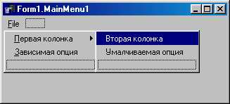

TMainMenu - главное меню формы (программы)
Компонент класса TMainMenu определяет главное меню формы. На форму можно поместить сколько угодно объектов этого класса, но отображаться в полосе меню в верхней части формы будет только тот из них, который указан в свойстве Menu формы.
После установки компонента на форму необходимо создать его опции. Для этого следует дважды щелкнуть по компоненту левой кнопкой мыши, либо нажать на нем правую кнопку[ Жаргонизмы “дважды щелкнуть по компоненту левой кнопкой мыши” и “нажать на нем правую кнопку” используются вполне сознательно в целях экономии вашего и моего времени. Разумеется, следовало бы писать что-нибудь вроде “в момент, когда указатель мыши находится над видимым изображением компонента, дважды подряд без заметной паузы нажать левую кнопку мыши” и “расположить указатель мыши так, чтобы острие указателя находилось в пределах видимого изображения компонента, и нажать правую кнопку мыши”. В дальнейшем я иногда буду прибегать к такого рода сокращениям, а посему -заранее приношу свои извинения, если они вам покажутся не очень литературными. ] и выбрать продолжение Menu Designer в появившемся вспомогательном меню, либо, наконец, щелкнуть по кнопке в правой половине строки items Инспектора объектов. Ниже показан вид окна конструктора меню, которое появится на экране после выполнения любого из перечисленных действий.
Окно конструктора меню
Создание опций не вызывает проблем. Перейдите в окно Инспектора объектов и введите текст опции в строке caption, после чего нажмите Enter - опция готова, и можно переходить к следующей. Каждая опция главного меню может раскрываться в список подопций или содержать конечную команду. Для создания подопций щелкните мышью по строке ниже опции и введите первую подопцию. Продолжайте ввод, пока не будет создан весь список подопций, после чего щелкните по пустому прямоугольнику справа от первой опции и введите вторую опцию. Процесс гораздо сложнее описать, чем выполнить.
В названиях опций можно указать символ “&” перед тем символом, который определит клавишу быстрого выбора опции (в терминологии Windows такие клавиши называются акселераторами). Например, выше показана опция Файл, которую можно выбрать сочетанием клавиш Alt+Ф. При создании меню эта опция в строке caption Инспектора объектов содержала текст &Файл.
Если вы захотите вставить разделительную черту, отделяющую группы подопций, назовите очередной элемент меню именем “-”.
Для создания разветвленных меню, т. е. таких, у которых подопций вызывают новые списки подопций, щелкните по подопций и нажмите Ctrl+вправо, где вправо - клавиша смещения курсора вправо. Такого же эффекта можно добиться после щелчка правой кнопкой мыши на подопций и выборе продолжения create Submenu.
Свойства компонента:
|
property AutoMerge: Boolean; |
Разрешает/запрещает слияние главного меню вторичной формы с главным меню основной формы в не MDI-приложениях |
|
type TMenuItemAutoFlag = (maAutomatic, maManual, maPar-ent) ; property AutoHotkeys: TMenuAuto-Flag; |
Определяет, будет ли следить программа за уникальностью клавиш быстрого выбора для всех опций меню: maAutomatic - автоматически при создании опции; maManual -с помощью вызова специального метода; maparent - по правилу, установленному для опции верхнего уровня |
|
property AutoLineReduction: TMenuItemAutoFlag; |
Определяет, будет ли программа автомати чески удалять лишние разделители между опциями многоколончатого меню. Тип TMenuItemAutoFlag описан в свойстве AutoHotkeys |
|
property Images: TCustomImageList; |
Содержит ссылку на объект - хранилище изображении, которые могут появляться около индивидуальных элементов (пунктов) в меню |
|
property Items: TMenuItem; default; |
Открывает индексированный доступ к опциям меню |
|
property OwnerDraw: Boolean; |
Определяет, будет ли программа прорисовывать опции меню автоматически или с помощью обработчика onDrawltem |
Если одна форма вызывает вторую форму в немодальном режиме, главное меню первой может сливаться с главным меню второй формы. Для этого свойство AutoMerge второй формы должно иметь значение True. Порядок слияния опций в этом случае устанавливается свойствами Groupindex опций второго меню. Чтобы продемонстрировать механизм слияния меню, проделайте следующее:
· Начните новое приложение и на форму положите компонент TMainMenu.
· Поместите в свойство Сaption единственной опции этого компонента значение открыть вторичное окно и напишите такой обработчик его события OnClick:
procedure TFormI.NIClick(Sender: TObject);
begin
Form2.MainMenul.AutoMerge := True;
Form2.Show
end;
· Присоедините к проекту вторую форму, щелкнув по инструментальной кнопке Н или с помощью опции File | New|
Form.
· Положите на эту форму TMainMenu, создайте в нем единственную опцию с Caption закрыть вторичное окно и таким обработчиком:
procedure TForm2.NIClick(Sender: TObject);
begin
Close;
Formi.MainMenul.Unmerge(MainMenul);
end;
Перед трансляцией свяжите модули окон предложениями Uses.
Обратите внимание: если при закрытии вторичного окна не восстановить опции главного меню методом unmerge, эти опции останутся прежними (измененными).
Свойство AutoMerge вторичного окна игнорируется, если оно вызывается в модальном режиме, а также если оно является дочерним окном MDI.
Наиболее важные методы компонента:
|
function DispatchCommand (ACommand: Word): Boolean; dynamic; |
Имитирует щелчок по опции, свойство которой command имеет значение ACommand. Если такой опции нет или она не является исполняемой, возвращает False |
|
procedure Merge(Menu: TMainMenu); |
Объединяет пункты главного меню с пунктами меню Menu |
|
procedure Unmerge(Menu: TMainMenu) ; |
Удаляет из главного меню пункты меню Menu |
Каждый элемент меню является объектом класса TMenuItem. Свойства этого класса описаны в следующей таблице. Термин “родительская опция” означает опцию, выбор которой приводит к раскрытию подменю с данной опцией.
|
property AutoCheck: Boo lean; |
Определяет, будет или нет автоматически изменяться свойство Сhecked при выборе опции меню |
|
type TMenuItemAutoFlag = (maAutomatic, maManual, maParent); |
Определяет, будет ли следить программа за уникальностью клавиш быстрого выбора для подоп ций: maAutomatic - автоматически при создании |
|
property AutoHotkeys: TMenuItemAutoFlag; |
подопции; maManual - с помощью вызова специального метода; maParent - по правилу, установленному для опции верхнего уровня |
|
property AutoLineReduction: TMenuItemAutoFlag; |
Определяет, будет ли программа автоматически удалять лишние разделители между опциями многоколончатого меню второго уровня. Тип TMenuItemAutoFlag описан в свойстве AutoHotkeys |
|
property Bitmap: TBitmap; |
Содержит ссылку на связанное с опцией изображение. Это изображение (если оно есть) появляется слева от опции. Свойство игнорируется, если установлено свойство Imagelndex (см. ниже) |
|
property Break: TMenuBreak; |
Позволяет создать многоколончатый список подменю (см.ниже) |
|
property Checked: Boolean; |
Если True, рядом с опцией появляется галочка |
|
property Command: Word; |
Используется при разработке приложений, обращающихся непосредственно к API-функциям Windows |
|
property Count: Integer; |
Содержит количество опций в подчиненном меню, связанном с данным элементом (только для чтения) |
|
property Default: Boolean; |
Определяет, является ли данная опция подменю умалчиваемой (см. ниже) |
|
property Grouplndex: Byte; |
Определяет групповой индекс для зависимых опций (см. свойство Radioltem) |
|
property Imagelndex: Integer; |
Содержит индекс связанного с опцией изображения из компонента TimageList. Это изображение (если оно есть) появляется слева от опции. Если свойство имеет значение -1, с опцией не связано никакого изображения из TimageList |
|
property Items[Index: Integer] : TMenuItem; |
Позволяет обратиться к любой опции подчиненного меню по ее индексу |
|
property Menulndex: Integer; |
Определяет индекс опции в списке items родительской опции |
|
property Radio Itern: Boolean; |
Определяет, зависит ли данная опция от выбора других опций в той же группе Grouplndex. Только одна опция группы может иметь True в свойстве checked. Рядом с такой опцией вместо галочки изображается круг |
|
property Shortcut: TshortCut; |
Задает клавиши-акселераторы для быстрого выбора данной опции |
|
property SubMenuImages: TCustomImageList; |
Содержит ссылку на объект - хранилище изображений, которые могут появляться около индивидуальных элементов (пунктов) в подменю этого пункта меню |
Разветвленная структура меню
В Delphi 4 (5 и 6) появилась возможность связывать с опциями меню небольшие изображения. Эти изображения можно задать либо свойством BitMap, либо свойством imageindex. В последнем случае предполагается, что для меню в целом определено свойство Images либо (только для версии 6) свойство SubMenuImages опции верхнего уровня. Изображение показывается слева от опции.
Подменю File среды Delphi
Как видим, опции Open, open Ptoject, Save и т. д. снабжены небольшими пиктограммами. Введение пиктограмм в меню, с одной стороны, повышает наглядность меню, а с другой - способствует унификации пиктограмм в рамках механизма действий. Если опция меню связана с каким-то действием своим свойством Action, а компонент TActionList, в котором это действие описано, в свою очередь, связан с хранилищем пиктограмм TimageList, индекс нужной пиктограммы можно задать в свойстве ImageIndex. В этом случае пиктограмма, указанная в свойстве BitMap (если она указана в нем), игнорируется.
Тип TMenuBreak определен следующим образом:
type TMenuBreak = (mbNone, mbBarBreak, mbBreak);
Свойство Break по умолчанию имеет значение mbNone. Два других возможных значения этого свойства используются для создания многоколончатых списков подменю. Значение mbBarBreak заканчивает предыдущую колонку и начинает новую. Эта опция меню будет открывать новую колонку, которая отделяется от предыдущей вертикальной чертой. Значение mbBreak также создает новую колонку, но не вставляет разделительную черту. Эти значения игнорируются в опциях самого первого уровня. В окне конструктора многоколончатое меню отображается как обычное.
Если в опции Default установлено значение True, такая опция выделяется цветом и выбирается двойным щелчком мыши на родительской опции. Только одна опция в подменю может быть умалчиваемой.

Пример многоколенчатого меню
В отличие от других видимых компонентов строка Hint для опций меню задает только расширенное сообщение, которое отображается на панели статуса.
Для элемента меню определено единственное событие Onciick, которое возникает при щелчке на опции или при нажатии Enter, если в этот момент данная опция была выбрана (подсвечена). Обработчик события становится доступен после двойного щелчка на опции в окне конструктора меню.
TPopupMenu - вспомогательное (локальное) меню
Компоненты класса TPopupMenu используются для создания вспомогательных (локальных) меню, появляющихся после нажатия правой кнопки мыши. В отличие от главного меню, вспомогательное меню может быть создано для любого оконного компонента. Чтобы связать щелчок правой кнопкой мыши на компоненте с раскрытием вспомогательного меню, в свойство PоPupmеnu компонента необходимо поместить имя компонента-меню.
Вспомогательное меню создается с помощью конструктора меню и содержит элементы описанного в TMenuItem, поэтому процесс создания и свойства вспомогательного меню ничем не Отличаются ОТ TMainMenu.